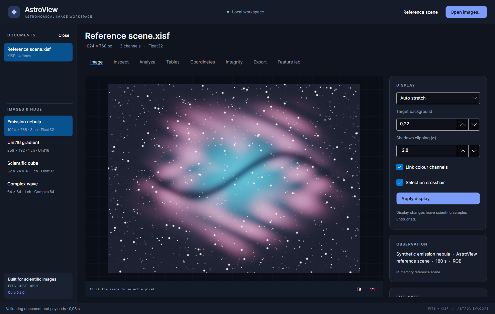

AstroView user manual
AstroView is a desktop workspace for viewing and examining astronomical FITS and XISF images. You can inspect original samples and metadata, browse catalogs, calculate supported sky coordinates, check file integrity, and export copies with explicit control over conversion and storage.
You do not need to write code to use the application. The separate Core developer guide covers programming against its library. This manual explains the controls you see in the desktop window.

Start here
- Install and launch AstroView.
- Work through the reference-scene walkthrough.
- Open your own FITS, XISF or distributed XISH document.
- Inspect and validate it, then export a copy when ready.
Find a task
| I want to… | Go to |
|---|---|
| Open several images and select a FITS extension | Workspace and documents |
| Brighten a dark preview, zoom or export a PNG | Viewing images |
| Find exposure/object metadata or add a note | Metadata |
| Measure sample statistics or inspect exact UInt64 values | Analysis |
| Browse a star catalog or create a typed XISF table | Tables |
| Translate a pixel position into RA/Dec | Coordinates |
| Check checksums, validate against a schema or sign a copy | Integrity |
| Change compression or convert FITS ↔ XISF | Export |
| Generate test data or allow a required external block | Feature lab |
| Understand an error or an unavailable preview | Troubleshooting |
Three distinctions to keep in mind
A display stretch changes the preview. It does not rewrite scientific pixel values. A PNG is a rendered display image; use a FITS/XISF export to retain scientific data and format metadata.
Edits are held in memory. Apply a metadata/table/XML edit, then export a copy to save it. Close or exit after exporting anything you want to keep. The current workspace is not an automatically saved project or editing session.
Conversion can omit information. The Export workspace reports supported transformations and omissions. Review it before allowing reported losses.
About the illustrations
The screenshots use AstroView's own synthetic reference scene, not a telescope
photograph. They show AstroView 0.2.0 at a 1480 × 940 window
size. Controls below the visible area are reached by scrolling. Number controls
can reflect your operating system's decimal separator; free-text metadata and
JSON follow the formats described in their chapters.
Implemented features and remaining limitations are summarized in shortcuts, glossary and limits. For a detailed format support contract, consult the support matrix.